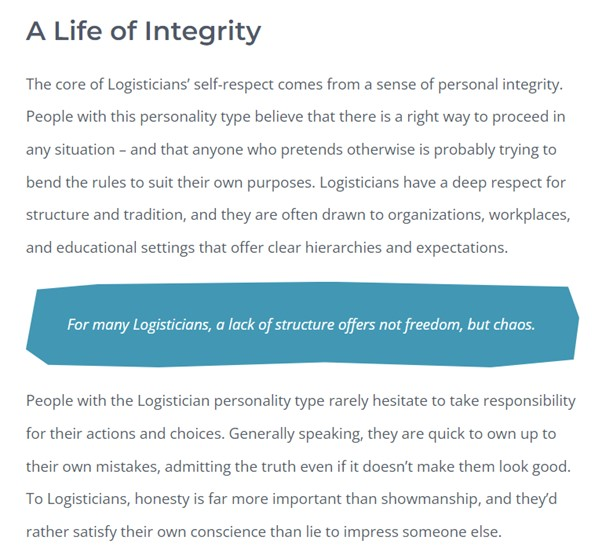
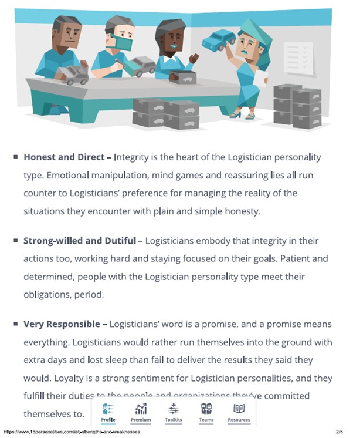
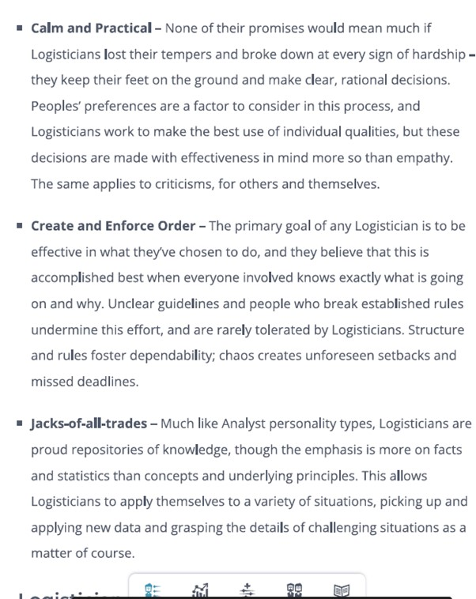
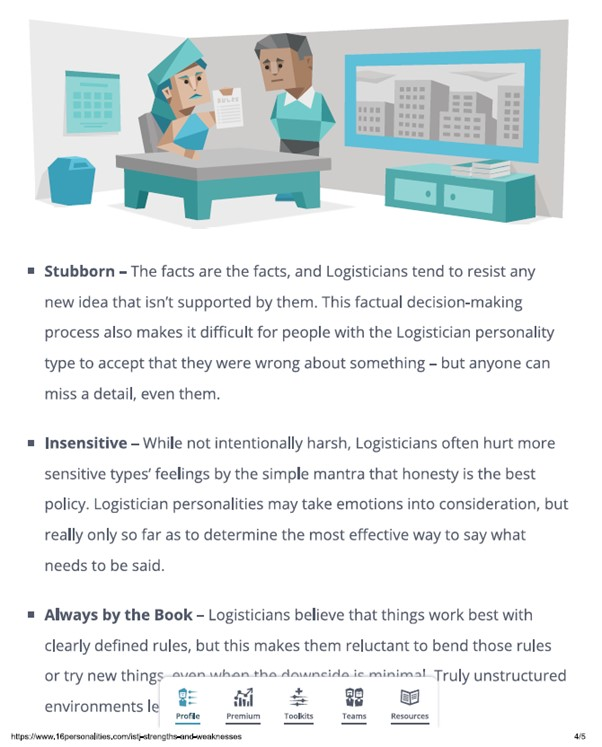
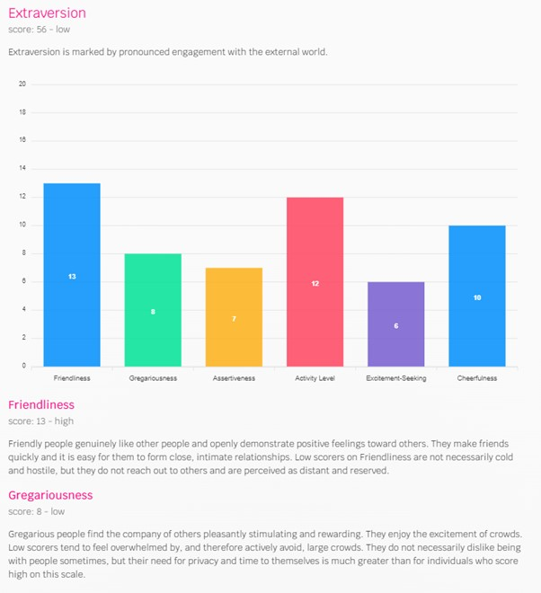
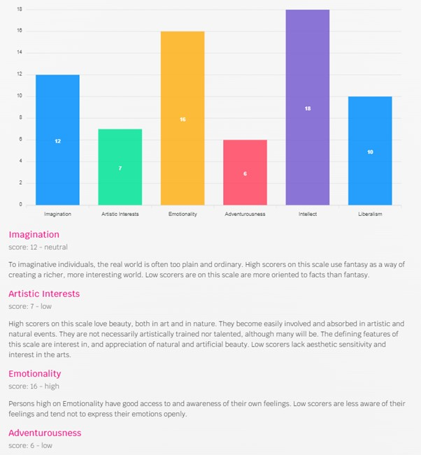
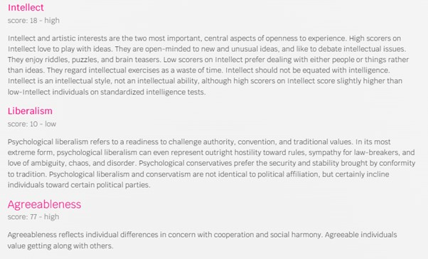

Personal Information
Name : Donny Yaang
Student ID : s3974581
Email : s3974581@student.rmit.edu.au
Nationality : Australian
Education : Bachelor of Business degree (University of Technology Sydney), Graduate Conversion to Accounting certificate (University of Technology Sydney), Certified Practising Accountant (CPA Australia)
About myself : I am an accountant working for a US company based in Australia.
Pastime : I like to hang out with friends on the weekend. We usually go for lunch and go to have coffee afterwards. We also like to go for day trip. I like travelling to places such as the Great Ocean Road, Torquay, and Daylesford. My weekend get-away is the Great Ocean Road. Every time I make a road trip there, I seem to always find something fresh to see and do.
Picture of myself

Interests in IT
My work in accounting involves working with teams located abroad. The people I work with are passionate, hard working and intelligent. The huge difference in salary between myself and the teams abroad is largely because I am remunerated based on the Australian standard of living. To remain competitive in a competitive job market, I believe that I need to upgrade myself. That is the reason I am currently studying IT.
My purpose to study Bachelor of Information Technology is to upskill myself in Information Technology. I also want to earn higher income to be able to provide for my future family. As I have mentioned, the accounting job market is highly competitive. Apart from upgrading my skill to remain competitive, I also want to explore better job opportunities that require both accounting and IT skill. As I continue my study and understand more of the IT job market and industry, I may also ultimately pursue IT career that may not have anything to do accounting.
I have used Microsoft Excel formulas to automate daily accounting tasks. Automation saves valuable resource named time to complete tasks. It requires IT knowledge in Microsoft Excel. The process of performing tasks simpler and quicker sparked my interest to study IT. Early in my accounting career, I used SQL to perform accounting reconciliation, which is an accounting term that involves matching a set of data against another set of data.
RMIT has the highest university ranking amongst other universities from the Open University. This makes it the logical university to study IT. In 2023 it ranked 190 globally . RMIT locality being based in Melbourne is another reason to study there. I am keen to connect with other students who reside in Melbourne to expand my network of friends.
At this stage studying IT is very much an exploration to get a taste of what IT work will be like and to also explore prospective career path. During my study I hope to be able to learn current and contemporary IT knowledge and to be able to use those skills in university projects. After I graduate I hope to build upon the skills further and join the profession.
Ideal Job
Job Link:
href=https://www.seek.com.au/job/58331208?type=standout#sol=8126b580a1ff09a07504f88c6d3018f4c6e988b2
What interest me in this role:
The salary in this job advertisement is what attracted me to this role. My research shows that DevOps role is created because of the of the problems that arise due to separation between of two teams, namely the developers and the operation/software implementation team. The separated created issues in fine-tubing and debugging the released software. By amalgamating the two teams into one (a.k.a as DevOps), the responsibility for successful software development and implementation now falls within one team called DevOps. This enhanced accountability, and reduced time to debug and implement software successfully. The DevOps role has three major components: development, testing and delivery.
Skills, qualifications, and experience required for the positions:
According to Edureka Master in Programming video, DevOps engineers need to be able to use scripting codes, writing codes for infrastructure, understand cloud technology, be able to communicate professionally and work with others, knowledge of continuous integration and delivery, proficient in various DevOps tools such as Linux, scripting, SCM, GitHub, Jenkins, Selenium, Amazon AWS, ISM, puppet, chef, ansible, docker, Splunk. 3
Skills, qualifications, and experience I currently have:
I have developed a relatively good skill in communicating and working well with others through my work. My work in accounting involves resolving accounting issues on a daily basis. This often requires collaboration with others. I have accounting experience and skill such as preparing financial reports, knowledge of the financial markets, validating the numbers presented in the report, time management, proficient in Microsoft Excel, and able to automate daily tasks using Microsoft excel.
A plan how I will obtain the skills, qualifications, and experience required for the position, building on those I currently have:
To be able to qualify for this DevOps role, I would need to complete a tertiary qualification in computer science, and IT work experience. I also need to be able to write codes, understand infrastructure function in an organization, able to communicate and work well with others, and know the various tools that DevOps use as mentioned by video created by Edureka Master in Programming. 3
Personality Profile
What do the personality test results mean for me?
According to Myers-Brigs personality test , my personality is classified as “Logistician”. The test result shows that I pride on integrity which includes commitment to work and honesty. I work well with well-defined responsibilities, expectation, and clear instructions. I am also a visual person which means I learn better when there is visual representation such as diagram, graphics, and other visual aid that enhances learning. The result of the third test from “Big Five Test” reinforces the test result that has been outlined by the Myers-Briggs personality test.
How do you think these results may influence your behaviour in a team?
In a team environment, as I need to have to set a clear expectation of what is required to complete the project well, first it is imperative to setup a structure from the start. The team needs to brainstorm of the project and determine a list of tasks that need to be completed, allocate the tasks as responsibilities to each group members, and provide a clear timeline of when these tasks need to be completed by. We also need to a regular group project update as an opportunity for each member to provide update on the progress of their tasks of the assignment. Should the member have difficulty in completing the assignment, this regular meeting can be used to discuss and communicate with other people in group in solving the issue e.g., whether he or she needs directions to complete the assignment, if other people in the group can help to complete the tasks, and so on. As a second point, as I have high commitment towards integrity, I also expect others to have the same level of integrity. Logistician personality type tend to abhor when others do not give their best. Instead of being judgmental and blaming, I need to be able to communicate better of bringing attention of the issues and resolving the issues collectively to achieve an outcome where the project can still be completed to a high standard and on time. On a final point, strong work ethics of a logistician can be open to misuse as if other people do not put in their share of work, as logisticians tend to take over the extra loads. Whilst logistician may not complain to directly, they do resent the fact that other people do not take the work responsibly. To overcome this, I will need to communicate with the group members more openly in terms of how the workload should be divided if a team member fails to deliver and how the member who fails to deliver should make up for the lack of contribution (if possible).
How should you take this into account when forming a team?
In forming a team, it could be easier if I could choose to work with the same personality type that of ‘logistician’. However, this may not always be possible as people have different personality types. I need to be able to work with others despite the differences in personality type. As such I need to understand that whilst I have high expectation when performing task, this can be expected only of myself. I cannot force my expectation with other people. I can only communicate of the goals and expectation, and to manage my expectation of them by encouraging them and reminding them that ultimately, we all have the same desired goals such as doing well in this subject. When they fail to deliver, I need to learn to communicate the issue to the group, understand that the issue can be fixed and as something to be solved. The issue is not about a person and thus avoid blaming game. I also can ask the group to brainstorm to solve the issue so that we could perform the project well. I also need to be mindful that I only need to try my best and not compare myself with other people as some of them may already have been worked in IT and ahead of the game in the IT world.
Myers-Briggs Type Indicator Test Result








Education Planner Org Test Result
http://www.educationplanner.org/students/self-assessments/learning-styles-quiz.shtml

Big Five Test Test Result
https://bigfive-test.com/






Project
Overview
The project will be about creating an app on iPhone that provide tourist information for “The Great Ocean Road” locality (i.e., ‘sight-seeing’, ‘activities’, ‘café and restaurants’ , and ‘local arts’) within one app.
This project is interesting because could have the business aspect of creating revenues to local businesses.
Currently no website or app exist that I am aware of that show case this information within one website/app. A tourist who wants to explore the area has to perform various google search to explore an area. Combining all in app makes travel easier and provides a more pleasant travel experience.
Motivation
For anyone visiting the Great Ocean Road the first time, searching for sight-seeing places, café, eatery, and cultural places are not that simple. The information are available, but they have to combine multiple information from different website to plan their journey. Potentially they could miss a great place to see.
“Visit Victoria” states that visitors spent $1.5 billion in the Great Ocean Road region by June 2019 financial year. By providing all information in one app, it provides better travel experience. It can also increase revenues for local businesses (art exhibitions, café, restaurants) that are featured by the app.
Description
The app is a user friendly app that provides information of the Great Ocean Road to those who want to visit the area. These information include sight-seeing places, activities to do, eatery, and local arts and community events.
In the main page, user has the option to enter their name, username, and email address, and to create a login.
After creating a login, the app will provide categories that user can explore. These categories include:
1. Sight-seeing places (such as Aireys Inlet lighthouse, Torquay beach, the Twelve Apostle)
2. Activities that user can do (hiking, cycling, walking)
3. Café and restaurants (i.e., specific restaurants and cafes in the locality such as The Salty Dog Cafe)
4. Local Arts (provides specific art exhibitions)
Once users select the categories of interest, the app will provide specific location that they can visit.
After categories of interest, the app will provide specific places that can be visited.
As an example:
• After selecting sight-seeing places, users can choose to visit Aireys Inlet lighthouse, Twelve Apostle, and so on.
• After selecting activities, there will be sub-activities such as hiking, cycling, or walking. After selecting the sub-activities, a specific location is provided.
• After selecting café and restaurants, then specific restaurants/ cafes can be selected.
• After selecting local Arts, the users can then choose the art exhibitions they want to see.
After selecting the specific places to see, the app will provide information such interest facts about the place, relevant photos, rating and comments from other users about the place, website of the place if it is a business, and other relevant information. The users should also have the option to be able to navigate to the place of interest.
More importantly, the specific places should be able to be sorted by rating system. The rating system has to be gathered reliability. This will help users to determine quickly the worth of their time and money in visiting a certain place as well as provide better travel planning experience.
The pages should also offer viewing in a map, or a list view. Map view will enable users to visualise the locations of the places within the map. Within the map view, users should be able to choose if they want to see all categories, or only a certain category such as “café and eater” only, or “sight-seeing places” only, or “arts exhibitions” only. They should also be able to choose to select multiple categories or all categories for viewing within a map. Both the map view and list view should allow users to change their viewing preferences. This means users can swap from map view to list view, and vice versa.
Tools and Technologies
Xcode is a tool that is free and uses swift programing language. For Windows it can be downloaded using MacStadium First.
Figma is a web-browser UI design tool that that are used to create app and website. It is currently deemed to be the best in the industry with features to deemed useful for the design processes.
The project can use Cloud which is data storage centre managed by a third-party cloud provider.
GitHub is another tool that is also needed.
Skills Required
The majority of developing my skill will need to be spent will be learning swift programming language used which is the programming language used in XCode. In addition, I also need to learn about User Interface, GitHub and being able to communicate and work well within the team.
To make the project successful, gaining feedback from local community, council and app users of how they want to see the end project completion should be insightful to the development of the project. Therefore, communication and team work, and ability to resolve obstacles are also crucial to the project.
Outcome
The success of the project hinges on whether the app provide better navigation experience in the Great Ocean Road vicinity. Instead of performing multiple searches in google, users should be able to be informed of the various categories (sight-seeing places, café and restaurants, activities to do, and local art exhibitions) in Great Ocean Road at the tip of their fingers. This should allow to manage their travel plan better and enhance their travel experience.
If the project is successful, it has the potential to be turned into an app that can be published and downloaded in the App Store.
References:
1.QS World University Ranking (2023) Top Global University. Available at: https://www.topuniversities.com/university-rankings/world-university-rankings/2023
2 Simplilearn (2021) DevOp Tutorial for Beginner. Available at: https://www.youtube.com/watch?v=Xrgk023l4lI
3 Edureka (2018) Who Is A DevOps Engineer? | DevOps Skills You Must Master | DevOps Engineer Master Program. Available at: https://www.bing.com/videos/search?q=devops+engineers+explained&docid=608022740851053979&mid=77E258B943A1D2578D9877E258B943A1D2578D98&view=detail&FORM=VIRE
4 Seek (2023) How to Become a DevOps Engineer? Available at: https://www.seek.com.au/career-advice/role/devops-engineer#qualifications?campaigncode=lrn:skj:sklm:cg:jbd:alpha
5 16 Personalities (2023) Free Personality Test. Available at: https://www.16personalities.com/free-personality-test
6 Visit Victoria (2023) Great Ocean Road Insight. Available at: https://corporate.visitvictoria.com/resources/regional-insights/great-ocean-road
7 Code with Chris (2020) “How to Make an App for Beginner Lesson 1. Available at: https://www.youtube.com/watch?v=jniJeamcIUU&list=PLMRqhzcHGw1ZkH8RuznGMS0NZs0jWQQ5a
8 EnvatoTuts (2018) How to Tutorial. Available at: https://webdesign.tutsplus.com/articles/what-is-figma--cms-32272
9 TechTarget (2023) Definition Cloud Storage. Available at: https://www.techtarget.com/searchstorage/definition/cloud-storagev